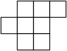

Question
The number of ways, in which the letters
A,B,C,D,E can be placed in the
8 boxes of the figure below so that no row remains empty and at most one letter can be placed in a box, is :

Answer and solution
Correct answer: D
The figure has
8 boxes arranged in
3 rows containing
3,
3, and
2 boxes respectively.
We must place the
5 distinct letters
A,B,C,D,E into
5 of the
8 boxes so that no row is empty.
Let
(r1,r2,r3) be the number of letters placed in Row 1 (
3 boxes), Row 2 (
3 boxes), and Row 3 (
2 boxes), with
r1+r2+r3=5 and
1≤r1≤3,
1≤r2≤3,
1≤r3≤2.
The valid distributions of
(r1,r2,r3) and the number of ways to choose the
5 boxes are:
(3,1,1)→(33)(13)(12)=6;
(1,3,1)→(13)(33)(12)=6;
(2,2,1)→(23)(23)(12)=18;
(2,1,2)→(23)(13)(22)=9; and
(1,2,2)→(13)(23)(22)=9.
The total number of valid ways to select
5 boxes is
6+6+18+9+9=48 (equivalently,
(58)−(55)−(55)−(56)=56−1−1−6=48).
Finally, the
5 distinct letters can be arranged in the
5 chosen boxes in
5!=120 ways, giving
48×120=5760 ways.